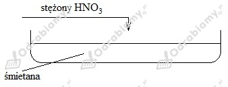

Proces zachodzący w opisanych przypadkach to denaturacja białka , polegająca na trwałym zniszczeniu struktury białka, w wyniku rozerwania stabilizujących ją wiązań wodorowych, jonowych i disulfidowych.
wędzenie - dym uzyskany ze spalania drewna
mrożenie - ciekły N2
pasteryzacja - temperatura 80-95oC
peklowanie - NaCl
kiszenie - fermentacja mlekowa
marynowanie - roztwór CH3COOH
Schemat:

Obserwacje:
Pod wpływem stężonego kwasu azotowego(V) śmietana barwi się na żółto.
Wniosek:
Pojawienie się żółtej barwy świadczy o zajściu reakcji ksantoproteinowej, charakterystycznej dla białek. Oznacza to, że śmietana zawiera białko.
Odpowiedź: W 0,25 kg napoju może znajdować się maksymalnie 50 mg kwasu benzoesowego E 210.
E 330 - kwas cytrynowy - pełni rolę przeciwutleniacza
E 338 - kwas fosforowy(V) - pełni rolę przeciwutleniacza
E 150d - karmel syntetyczny - barwnik
E 954 - sacharyna - substancja słodząca
E 950 - acesulfam K - substancja słodząca
E 951 - aspartam - substancja słodząca
E 211 - benzoesan sodu - konserwant, hamuje rozwój pleśni i drożdży
E 202 - sorbinian potasu - konserwant